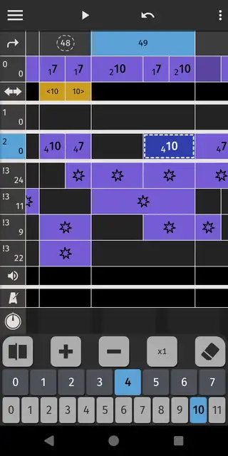
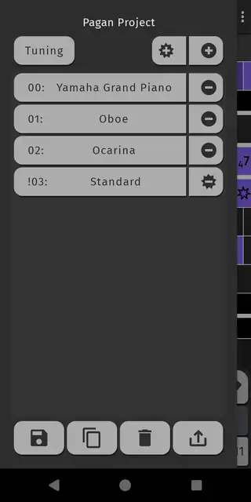

Pagan
صوت وفيديو وموسيقى
Pagan is a mobile-first music sequencer. Instead of taking what works in a desktop setup and trying to smoosh that into a pocket-size interface, Pagan was made from the ground up - all-the-while reconsidering what is intrinsic to music and what is an artifact of systems created while numeracy was st
✓ ترخيص مفتوح (GPL-3.0-only) · آخر تحديث: 2026-11-17
1.8.36الإصدار
5.5 MBالحجم
GPL-3.0-onlyالرخصة
Open in Kanzتحميل APK (5.5 MB)
Download APK
SHA-256: 474ee00313d5805d32b57f26058bd50d1cda5c790c0a4d88fac033bf1bf13ab5


امسح الكود لفتح صفحة التطبيق
Scan to open this app page
لو كنز مش متثبت عندك: نزّل متجر كنز.
Not installed? Get the Kanz store.